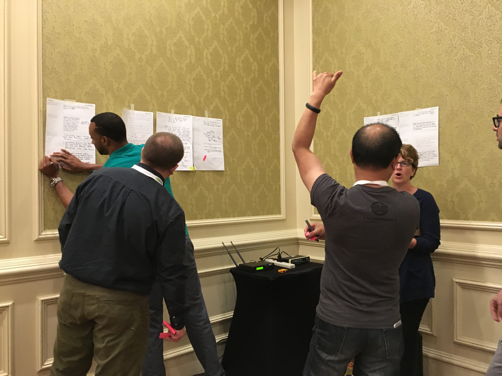
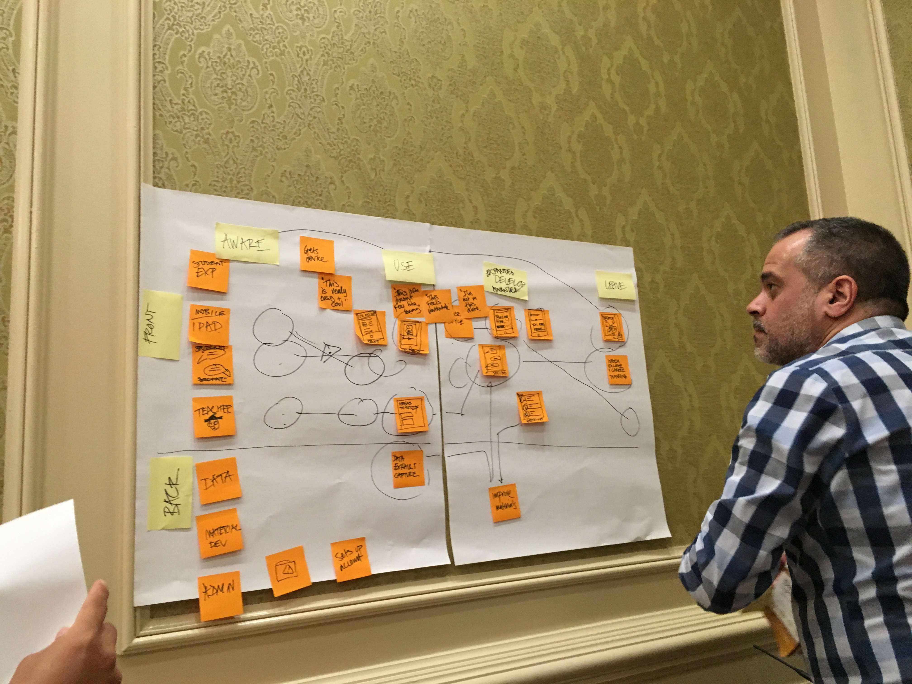
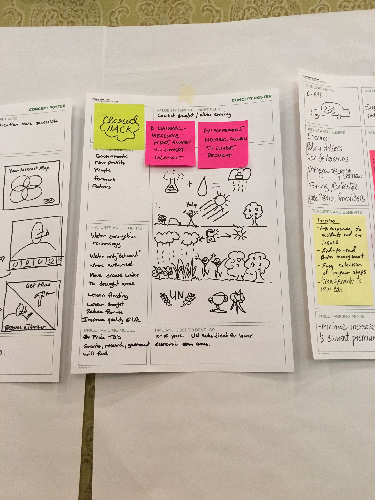

Rachel Naomi Design
About
Css Dev Conf
TU Talk
Mentorship
EUX 16
Enterprise UX, San Antonio, TX
Workshop–Service Design: June 10, 2016

http://pln.me/eux16
multi-disciplinary process like film making
spend a lot of time on concept art, story boards, and screenplays that are not seen by anyone
inefficient: what is shot is not in final film
start making it in the editing
wireframes comes from storyboard because it is not the real thing, understand the difference
despecialized edition of star wars - remade it to so it is like the old way released in theaters on dvd
Service design
Minimal viable product += Minimal lovable product (service)
Forcing people to use tools that you need to use, make them more lovable
Concept boards: make intangible tangible
Tacit/passive communication. having stuff on the wall has power to communicate ideas
replacing telepathy
services end up becoming a real world thing
Services never end because it is not like a product where you know what it will be like. more like gardening
product vs services
insurance is not a product, it is a service
you can't hold it in your hand, you don't know until you use it, how they treat you, is it easy to understand the policy
Workshop: Water utility vs AirBNB
Hand method: helps structure your approach, certification and the story of your pitch
Thesis/statement
questions
facts
stories
idea
Every time you give a wow moment, everything is crap. might as well make it just work
Aligning business values to needs
fluffy statements, invert because everyone says it and make it unique
four column synthesis
Diamond method, divergent convergence, problem - ideas - make it smaller solution
Space: book about designing spaces
If you are not giving anyone choice like gov, it makes you want to make it much better
If regulation is there: fight the regulation thru lobbying or follow it
consistent tone of voice with data usage and presentation
Senior stake holder in this type of meeting and frenemies, slightly negative, 80% friends and 20% frenemies. want it to progress though
problem space and context
Service journey, see entire ecosystem visualized in that way. you cut out cancer and find out it is much worse as an example
There isn't a blueprinting tool (Smapply, murally)
should be a living doc if it needs to change make digital
http://ciid.dk/tools_workshops/
Fractal nature of service design
Eames film "powers of 10"
Long docs obscure important connections (silo orgs are assembly line)
sometimes orgs are in satellite view on a map and clouds ecosystem
spreadsheets are poor tools for human experience
touch point effects the whole system
silos turn on side
airline that started their own security line
Visually map in flight projects to see research, gaps, and overlap

Air BnB and Water Utility

Presentations
Day 1 notes
Day 2 notes